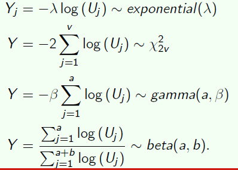
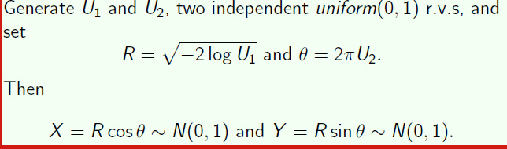
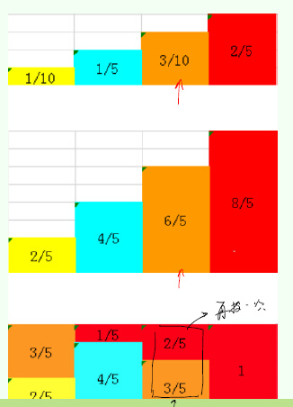
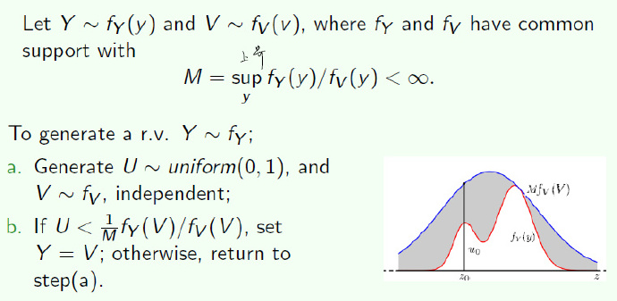
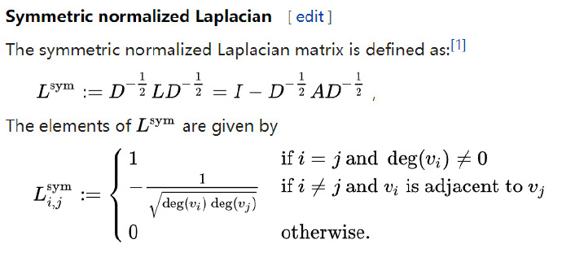
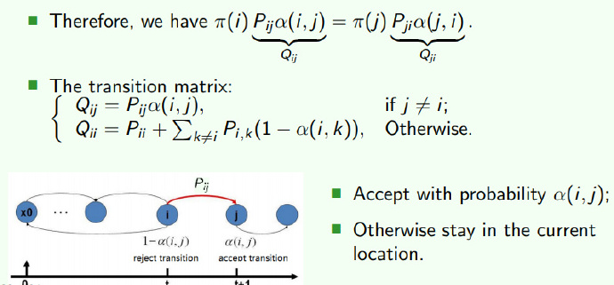
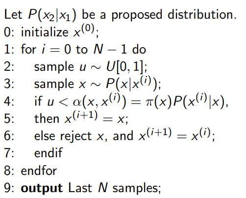

Population
Let the population be of size N N N x 1 ; x 2 ; . . . ; x N x_1; x_2; ...; x_N x 1 ; x 2 ; . . . ; x N
μ = 1 N ∑ x i \mu = \frac{1}{N}\sum x_i μ = N 1 ∑ x i τ = N μ \tau = N\mu τ = N μ σ 2 = 1 N ∑ ( x i − μ ) 2 = 1 N ∑ x i 2 − μ 2 \sigma^2 = \frac{1}{N} \sum(x_i - \mu)^2 = \frac{1}{N}\sum x_i^2 -\mu^2 σ 2 = N 1 ∑ ( x i − μ ) 2 = N 1 ∑ x i 2 − μ 2
Simple Random Sampling
We will denote the sample size by n n n n n n N N N X 1 ; X 2 ; . . . ; X n X_1; X_2; ...; Xn X 1 ; X 2 ; . . . ; X n
μ ^ = X ˉ = 1 n ∑ X i \hat{\mu} = \bar{X} = \frac{1}{n} \sum X_i μ ^ = X ˉ = n 1 ∑ X i τ ^ = N X ˉ \hat{\tau} = N\bar{X} τ ^ = N X ˉ
Sampling Mean
E ( X ˉ ) = μ E(\bar{X} ) = \mu E ( X ˉ ) = μ V a r ( X ˉ ) = σ 2 n Var(\bar{X}) = \frac{\sigma^2} {n} V a r ( X ˉ ) = n σ 2 if sampling without replacement（default）:
V a r ( X ˉ ) = σ 2 n ( 1 − n − 1 N − 1 ) Var(\bar{X}) = \frac{\sigma^2}{n} (1- \frac{n-1}{N-1}) V a r ( X ˉ ) = n σ 2 ( 1 − N − 1 n − 1 ) σ X ˉ ≈ σ n \sigma_{\bar{X}} \approx \frac{\sigma}{\sqrt{n}} σ X ˉ ≈ n σ it is easy to see, the larger n n n σ X ^ \sigma_{\hat{X}} σ X ^
Estimation of the population σ \sigma σ
σ 2 \sigma^2 σ 2
σ ^ 2 = 1 n ∑ X i 2 − X ˉ 2 \hat{\sigma}^2 = \frac{1}{n} \sum X_i^2 - \bar{X}^2 σ ^ 2 = n 1 ∑ X i 2 − X ˉ 2 E ( σ ^ 2 ) = σ 2 ( n − 1 n ) N N − 1 E(\hat{\sigma}^2) = \sigma^2 (\frac{n-1}{n}) \frac{N}{N-1} E ( σ ^ 2 ) = σ 2 ( n n − 1 ) N − 1 N σ 2 \sigma^2 σ 2 so the unbiased estimate of σ 2 \sigma^2 σ 2 1 n − 1 N − 1 N ∑ ( X i − X ˉ ) 2 \frac{1}{n-1}\frac{N-1}{N} \sum (X_i - \bar{X})^2 n − 1 1 N N − 1 ∑ ( X i − X ˉ ) 2
V a r ( X ˉ ) Var(\bar{X}) V a r ( X ˉ )
V a r ( X ˉ ) = σ 2 n ( 1 − n − 1 N − 1 ) Var(\bar{X}) = \frac{\sigma^2}{n} (1- \frac{n-1}{N-1}) V a r ( X ˉ ) = n σ 2 ( 1 − N − 1 n − 1 ) An unbiased estimate of V a r ( X ˉ ) Var(\bar{X}) V a r ( X ˉ )
s X ˉ 2 = σ ^ n ( n n − 1 ) ( N − 1 N ) ( N − n N − 1 ) s_{\bar{X}}^2 = \frac{\hat{\sigma}}{n} (\frac{n}{n-1}) (\frac{N-1}{N}) (\frac{N-n}{N-1}) s X ˉ 2 = n σ ^ ( n − 1 n ) ( N N − 1 ) ( N − 1 N − n ) E ( s X ˉ 2 ) = V a r ( X ˉ ) E(s_{\bar{X}}^2) = Var(\bar{X}) E ( s X ˉ 2 ) = V a r ( X ˉ )
注意，这里是总体均值的估计量X ˉ \bar{X} X ˉ
Random Sampling
Direct model
Pseudo-random number generation
how to get random distribution in computer?
using uniform distribution to get

Box-muller algorithm

Aliasing sample

在计算机处理中，找范围需要log n \log n log n
Indirect model
Reject sampling

尽量选择最小的能包含原分布的分布，能使得拒绝的次数减少。
证明
Stratified sampling
population μ \mu μ σ 2 \sigma^2 σ 2
The population mean and variance of the lth stratum are denoted by μ l \mu_l μ l σ l 2 \sigma^2_l σ l 2
μ = 1 N ∑ l = 1 L ∑ i = 1 N i x i l = ∑ l = 1 L W l μ l \mu = \frac{1}{N}\sum_{l=1}^{L}\sum_{i=1}^{N_i}x_{il} = \sum_{l=1}^{L} W_l\mu_l μ = N 1 ∑ l = 1 L ∑ i = 1 N i x i l = ∑ l = 1 L W l μ l
sample μ \mu μ σ 2 \sigma^2 σ 2
l l l
X l ˉ = 1 n l ∑ i = 1 n l X i l \bar{X_l} = \frac{1}{n_l}\sum\limits_{i=1}^{n_l}X_{il} X l ˉ = n l 1 i = 1 ∑ n l X i l
l l l
s l 2 = 1 n l − 1 ∑ i = 1 n l ( X i l − X l ˉ ) 2 s_l^2 = \frac{1}{n_l-1}\sum\limits_{i=1}^{n_l}(X_{il} - \bar{X_l})^2 s l 2 = n l − 1 1 i = 1 ∑ n l ( X i l − X l ˉ ) 2
the obvious estimate of μ \mu μ
X s ˉ = ∑ l = 1 L N l X l ˉ N = ∑ l = 1 L W l X ˉ l \bar{X_s} = \sum\limits_{l=1}^{L}\frac{N_l\bar{X_l}}{N} = \sum\limits_{l=1}^{L}W_l \bar X_l X s ˉ = l = 1 ∑ L N N l X l ˉ = l = 1 ∑ L W l X ˉ l it is an unbiased estimator of μ \mu μ
The variance of the stratied sample mean is given by:
V a r ( X s ˉ ) = ∑ l = 1 L W l 2 σ l 2 n l ( 1 − n l − 1 N l − 1 ) Var(\bar{X_s}) = \sum\limits_{l=1}^{L}W_l^2\frac{\sigma_l^2}{n_l}(1 - \frac{n_l-1}{N_l-1}) V a r ( X s ˉ ) = l = 1 ∑ L W l 2 n l σ l 2 ( 1 − N l − 1 n l − 1 )
If the sampling fractions within all strata are small:
V a r ( X s ˉ ) ≈ ∑ l = 1 L W l 2 σ l 2 n l Var(\bar{X_s}) \approx \sum\limits_{l=1}^{L}W_l^2\frac{\sigma_l^2}{n_l} V a r ( X s ˉ ) ≈ l = 1 ∑ L W l 2 n l σ l 2
using s l 2 s_l^2 s l 2 σ l 2 \sigma_l^2 σ l 2 V a r ( X s ˉ ) Var(\bar{X_s}) V a r ( X s ˉ )
s X s ˉ 2 = ∑ l = 1 L W l 2 s l 2 n l ( 1 − n l − 1 N l − 1 ) s_{\bar{X_s}}^2 = \sum\limits_{l=1}^L W_l^2 \frac{s_l^2}{n_l}(1-\frac{n_l-1}{N_l-1}) s X s ˉ 2 = l = 1 ∑ L W l 2 n l s l 2 ( 1 − N l − 1 n l − 1 )
estimator of population
E ( T s ) = τ E(T_s) = \tau E ( T s ) = τ V a r ( T s ) = N 2 V a r ( X s ˉ ) = N 2 ∑ l = 1 L W l 2 σ l 2 n l ( 1 − n l − 1 N l − 1 ) = ∑ l = 1 L N l 2 σ l 2 n l ( 1 − n l − 1 N l − 1 ) Var(T_s) = N^2Var(\bar{X_s}) = N^2\sum\limits_{l=1}^{L}W_l^2\frac{\sigma_l^2}{n_l}(1 - \frac{n_l-1}{N_l-1}) = \sum\limits_{l=1}^{L}N_l^2\frac{\sigma_l^2}{n_l}(1 - \frac{n_l-1}{N_l-1}) V a r ( T s ) = N 2 V a r ( X s ˉ ) = N 2 l = 1 ∑ L W l 2 n l σ l 2 ( 1 − N l − 1 n l − 1 ) = l = 1 ∑ L N l 2 n l σ l 2 ( 1 − N l − 1 n l − 1 )
methods of allocation
ideal
The sample sizes n 1 ; . . . ; n L n_1;... ;n_L n 1 ; . . . ; n L V a r ( X s ˉ ) Var (\bar{X_s}) V a r ( X s ˉ ) n 1 + . . . . + n L = n n_1 + .... + n_L = n n 1 + . . . . + n L = n
n l = n W l σ l ∑ l = 1 L W k σ k n_l = n \frac{W_l\sigma_l}{\sum_{l=1}^{L}W_k\sigma_k} n l = n ∑ l = 1 L W k σ k W l σ l
可以发现，每一层的采样个数取决于某一层的方差和个数。
the stratified estimate using the optimal allocations as given in n l n_l n l
V a r ( X s o ˉ ) = ( ∑ W l σ l ) 2 n Var(\bar{X_{so}}) = \frac{(\sum W_l \sigma _l)^2}{n} V a r ( X s o ˉ ) = n ( ∑ W l σ l ) 2
σ l \sigma_l σ l if n l = n W l n_l = nW_l n l = n W l
V a r ( X s p ˉ ) = ∑ l = 1 L W l 2 σ l 2 n l = 1 n ∑ l = 1 L W l σ l 2 Var(\bar{X_{sp}}) = \sum\limits_{l=1}^L W_l^2\frac{\sigma^2_l}{n_l} = \frac{1}{n} \sum\limits_{l=1}^LW_l\sigma^2_l V a r ( X s p ˉ ) = l = 1 ∑ L W l 2 n l σ l 2 = n 1 l = 1 ∑ L W l σ l 2
it is easy to see that the different of V a r ( X s p ˉ ) Var(\bar{X_{sp}}) V a r ( X s p ˉ ) V a r ( X s o ˉ ) Var(\bar{X_{so}}) V a r ( X s o ˉ )
V a r ( X s p ˉ ) − V a r ( X s o ˉ ) = 1 n ∑ l = 1 L W l ( σ l − σ ˉ ) 2 Var(\bar{X_{sp}}) - Var(\bar{X_{so}}) = \frac{1}{n}\sum\limits_{l=1}^L W_l(\sigma_l - \bar{\sigma})^2 V a r ( X s p ˉ ) − V a r ( X s o ˉ ) = n 1 l = 1 ∑ L W l ( σ l − σ ˉ ) 2
where σ ˉ = ∑ l = 1 L W l σ l \bar{\sigma} = \sum\limits_{l=1}^L W_l\sigma_l σ ˉ = l = 1 ∑ L W l σ l
MCMC
We cannot sample directly from the target distribution p ( x ) p(x) p ( x ) f ( x ) p ( x ) d x f (x)p(x)dx f ( x ) p ( x ) d x
Create a Markov chain whose transition matrix does not depend on the normalization term.
Make sure the chain has a stationary distribution π ( i ) \pi(i) π ( i )
After sufficient number of iterations, the chain will converge the stationary distribution.
Markov Chain and Random Walk
A random process is called a Markov Process if conditional on the current state, its future is independent of its past.
P ( X n + 1 = x n + 1 ∣ X 0 = x 0 , . . . , X n = x n ) = P ( X n + 1 = x n + 1 ∣ X n = x n ) P(X_{n+1} = x_{n+1}| X_0 = x_0,...,X_n = x_n) = P(X_{n+1} = x_{n+1}|X_{n} = x_n) P ( X n + 1 = x n + 1 ∣ X 0 = x 0 , . . . , X n = x n ) = P ( X n + 1 = x n + 1 ∣ X n = x n ) The term Markov property refers to the memoryless property of a stochastic process.
A Markov chain X t X_t X t homogeneous if P ( X s + t = j ∣ X s = i ) P(X_{s+t} = j | X_s = i) P ( X s + t = j ∣ X s = i )
P ( X s + t = j ∣ X s = i ) = P ( X t = j ∣ X 0 = i ) P(X_{s+t} = j| X_s = i) = P(X_t = j| X_0 = i) P ( X s + t = j ∣ X s = i ) = P ( X t = j ∣ X 0 = i )
If moreover P ( X n + 1 = j ∣ X n = i ) = P i j P(X_{n+1} = j |X_n = i) = P_{i}j P ( X n + 1 = j ∣ X n = i ) = P i j n n n X X X homogeneous Markov chain .
Transition matrix
The transition matrix is an N × N N\times N N × N P ( t ) P^{(t)} P ( t ) ∀ n \forall n ∀ n
∑ y P x , y ( t + 1 ) = ∑ y P [ X t + 1 = y ∣ X t = x ] = 1 \sum_{y}P_{x,y}^{(t+1)} = \sum_yP[X_{t+1} = y| X_t = x] =1 y ∑ P x , y ( t + 1 ) = y ∑ P [ X t + 1 = y ∣ X t = x ] = 1
this is not a symmetric matrix
using normalized laplacian matrix to calculate the eigenvalues

State distribution
Let π ( t ) \pi(t) π ( t ) π x ( t ) = P [ X t = x ] \pi^{(t)}_x =P[X_t = x] π x ( t ) = P [ X t = x ]
For a finite chain, π ( t ) \pi^{(t)} π ( t ) N N N ∑ x π x ( t ) = 1 \sum_x\pi_x^{(t)} =1 ∑ x π x ( t ) = 1 π ( t + 1 ) = π ( t ) P ( t + 1 ) \pi^{(t+1)} = \pi^{(t)}P^{(t+1)} π ( t + 1 ) = π ( t ) P ( t + 1 )
π y t + 1 = ∑ x P [ X t + 1 = y ∣ X t = x ] P [ X t = x ] = ∑ x π x ( t ) P x , y ( t + 1 ) \pi_y^{t+1} = \sum_xP[X_{t+1} = y| X_t = x]P[X_t = x] = \sum_x\pi_x^{(t)}P_{x,y}^{(t+1)} π y t + 1 = x ∑ P [ X t + 1 = y ∣ X t = x ] P [ X t = x ] = x ∑ π x ( t ) P x , y ( t + 1 )
A stationary distribution of a finite Markov chain with transition matrix P P P π \pi π π P = π \pi P = \pi π P = π
Irreducibility
State y y y x x x y y y x x x P n ( x , y ) > 0 , ∀ n P^n{(x,y)} > 0, \forall n P n ( x , y ) > 0 , ∀ n
State x x x y y y y y y x x x x x x y y y We say that the Markov chain is irreducible if all pairs of states communicates.
Aperiodicity
The period of a state x x x greatest common divisor (gcd) , such that d x = g c d { n ∣ ( P n ) x , x > 0 } d_x = gcd\{n|(P^n)x,x > 0\} d x = g c d { n ∣ ( P n ) x , x > 0 } aperiodic if its period is 1. A Markov chain is aperiodic if all its states are aperiodic.
Theorem
If the states x x x y y y d x = d y d_x = d_y d x = d y
We have ( P n ) x , x = 0 (P^n)x,x = 0 ( P n ) x , x = 0 n mod ( d x ) ≠ 0 n \mod(d_x ) \ne 0 n ( d x ) ≠ 0
Detailed Balance Condition
Let X 0 , X 1 , . . . , X_0,X_1, ..., X 0 , X 1 , . . . , P P P π \pi π
π ( i ) P i j = π ( j ) P ( j i ) \pi(i)P_{ij} = \pi(j)P_{(ji)} π ( i ) P i j = π ( j ) P ( j i )
then π ( x ) \pi(x) π ( x )
MCMC algorithm
Revising the Markov Chain
How to choose α ( i , j ) \alpha(i , j) α ( i , j ) π ( i ) P i j α ( i , j ) = π ( j ) P j i α ( j , i ) \pi(i)P_{ij} \alpha (i , j) = \pi (j)P_{ji} \alpha(j,i) π ( i ) P i j α ( i , j ) = π ( j ) P j i α ( j , i )
In terms of symmetry, we simply choose α ( i , j ) = π ( j ) P j i , α ( j , i ) = π ( i ) P i j \alpha (i , j) = \pi(j)P_{ji} ,\alpha (j,i) = \pi(i)P_{ij} α ( i , j ) = π ( j ) P j i , α ( j , i ) = π ( i ) P i j

这就是MCMC方法的基本思想：既然马尔科夫链可以收敛于一个平稳分布，如果这个分布恰好是我们需要采样的分布 ，那么当马尔科夫链在第n步收敛之后，其后续不断生成的序列X(n), X(n+1), ... 就可以当做是采样的样本。
我们构造一个Q i j Q_{ij} Q i j Q Q Q P P P α \alpha α α ( i , j ) = π ( j ) P ( j , i ) \alpha(i,j) = \pi(j)P(j,i) α ( i , j ) = π ( j ) P ( j , i )
MCMC Sampling Algorithm

现在我们的目的是要按照转移矩阵Q Q Q
3步代表先用原来的P P P x x x 4步的接受率就是将前后两个状态带入α ( i , j ) = π ( j ) P ( j , i ) \alpha(i,j) = \pi(j)P(j,i) α ( i , j ) = π ( j ) P ( j , i ) P ( x ∣ x ( i ) ) α ( i , j ) P(x|x^{(i)})\alpha(i,j) P ( x ∣ x ( i ) ) α ( i , j ) Q Q Q
Metropolis-Hastings algorithm
对于MCMC方法，唯一不好的地方是我们需要考虑α \alpha α α \alpha α α \alpha α
对于目前第x ( i ) x^{(i)} x ( i )
π ( x ( i ) ) P ( x ( j ) ∣ x ( i j ) ) α ( i , j ) = π ( x ( j ) ) P ( x ( i ) ∣ x ( j ) ) α ( j , i ) \pi(x^{(i)})P(x^{(j)}|x^{(ij)}) \alpha(i,j) = \pi(x^{(j)})P(x^{(i)}| x^{(j)})\alpha(j,i) π ( x ( i ) ) P ( x ( j ) ∣ x ( i j ) ) α ( i , j ) = π ( x ( j ) ) P ( x ( i ) ∣ x ( j ) ) α ( j , i )
我们只需要将右边的α \alpha α α \alpha α
α ( i , j ) = min { 1 , π ( x ) P ( x ( i ) ∣ x ) P ( x ( i ) ) P ( x ∣ x ( i ) ) } \alpha(i,j) = \min \{1,\frac{\pi(x)P(x^{(i)}| x)}{P(x^{(i)})P(x|x^{(i)})}\} α ( i , j ) = min { 1 , P ( x ( i ) ) P ( x ∣ x ( i ) ) π ( x ) P ( x ( i ) ∣ x ) }
因此，算法会稍微改变一点：
Gibbs Sampling
提高接受率是一种很好的办法，那么有没有一种方法能保证接受率为1呢？
Intuition
考虑一个二维分布：
P ( x 1 , y 1 ) P ( y 2 ∣ x 1 ) = P ( x 1 ) P ( y 1 ∣ x 1 ) P ( y 2 ∣ x 1 ) P(x_1,y_1)P(y_2|x_1) = P(x_1) P(y_1|x_1)P(y_2|x_1) P ( x 1 , y 1 ) P ( y 2 ∣ x 1 ) = P ( x 1 ) P ( y 1 ∣ x 1 ) P ( y 2 ∣ x 1 ) P ( x 1 , y 2 ) P ( y 1 ∣ x 1 ) = P ( x 1 ) P ( y 2 ∣ x 1 ) P ( y 1 ∣ x 1 ) P(x_1,y_2)P(y_1|x_1) = P(x_1)P(y_2|x_1)P(y_1|x_1) P ( x 1 , y 2 ) P ( y 1 ∣ x 1 ) = P ( x 1 ) P ( y 2 ∣ x 1 ) P ( y 1 ∣ x 1 )
不难发现：
P ( x 1 , y 1 ) P ( y 2 ∣ x 1 ) = P ( x 1 , y 2 ) P ( y 1 ∣ x 1 ) P(x_1,y_1)P(y_2|x_1) =P(x_1,y_2)P(y_1|x_1) P ( x 1 , y 1 ) P ( y 2 ∣ x 1 ) = P ( x 1 , y 2 ) P ( y 1 ∣ x 1 )
我们可以发现，若沿着坐标轴移动，其分布满足平稳分布。
因此：
很容易拓展到多维情形
优点
不需要事先知道联合概率，用于只知道条件概率的情形
每次接受率都为1
达到平稳分布后，采样点逼近联合概率